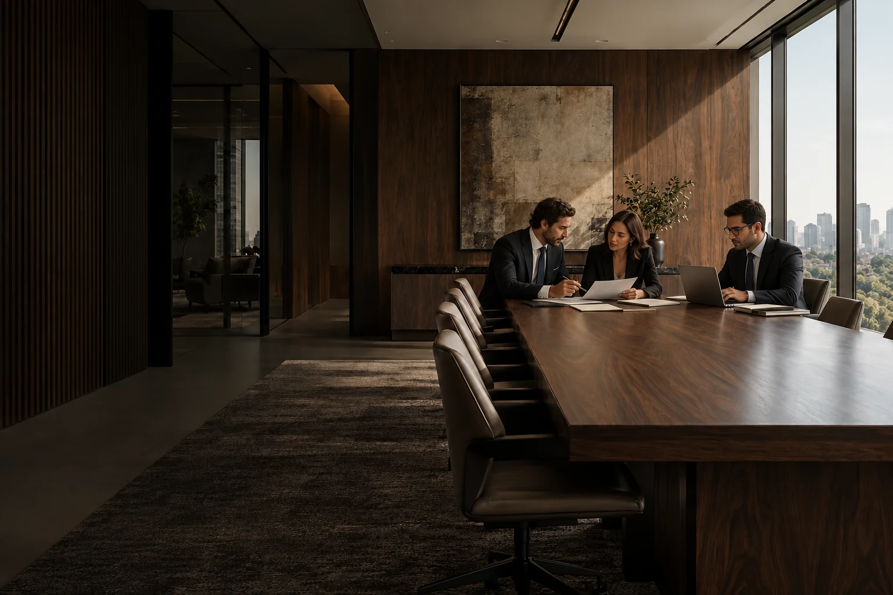
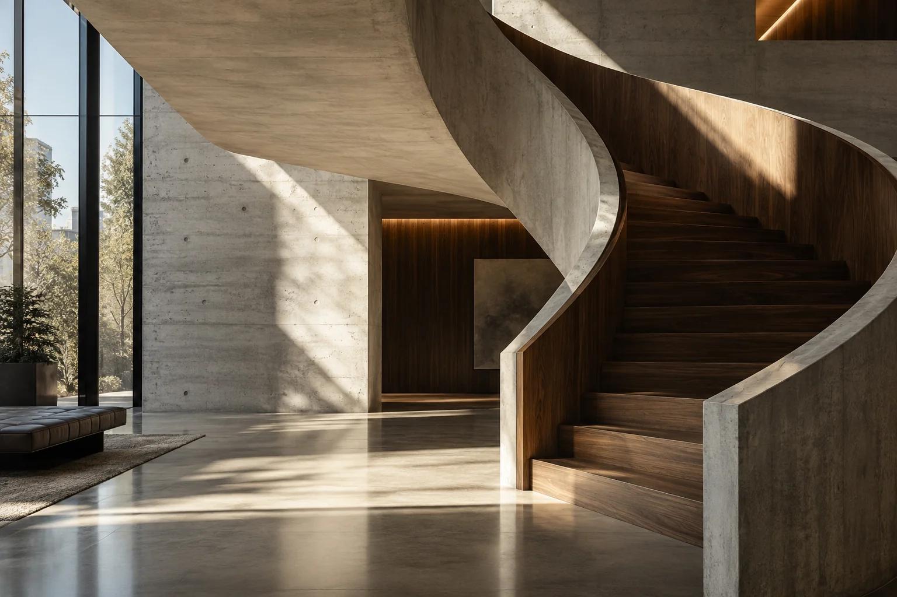
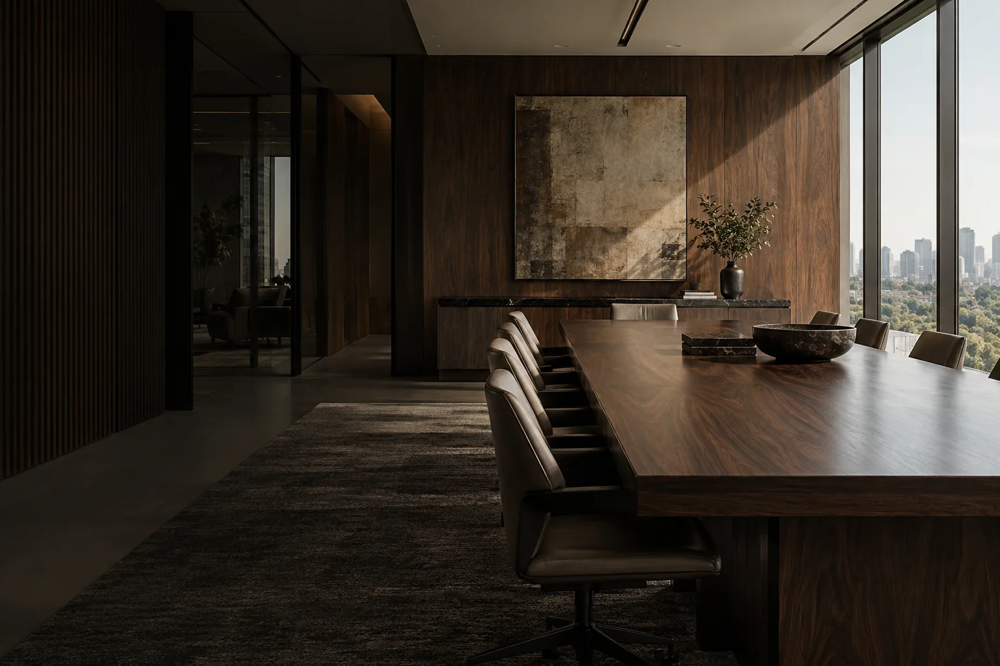
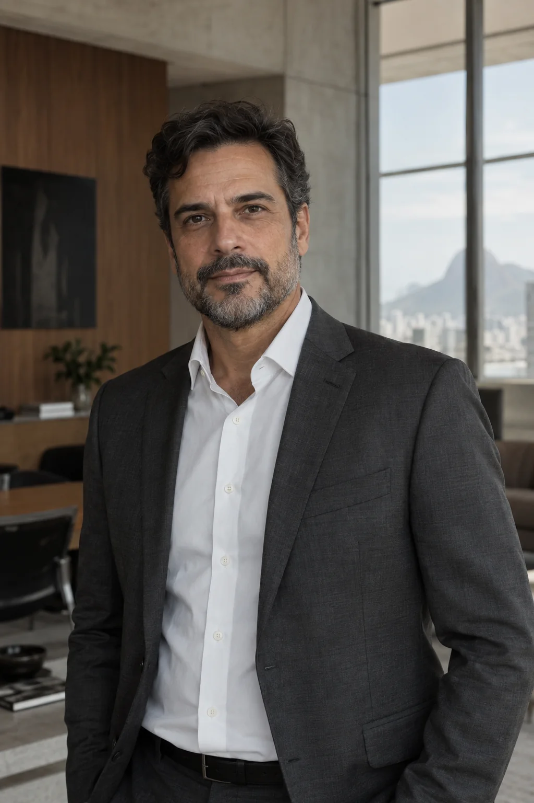

contextos complexos.
Visão jurídica para os próximos passos do seu negócio.
Assessoria jurídica para empresas, empresários e decisões de alta complexidade.
Conheça nossa atuação Fale com o escritórioDireito não acontece
isolado do negócio.
Entender a legislação é apenas parte do trabalho. Para orientar decisões relevantes, é preciso compreender também o negócio, o contexto e as consequências de cada escolha.
A Vértice atua ao lado de empresas e empresários em questões que exigem análise técnica, visão estratégica e proximidade.

Assessoria jurídica
conectada
à realidade
dos negócios.
01Societário e M&A
Organização de sociedades, fusões e aquisições e apoio às decisões entre sócios.
Da organização das relações entre sócios à preparação de uma operação, cada etapa pede uma leitura integrada da estrutura, dos interesses envolvidos e dos próximos movimentos do negócio.
Converse sobre este tema02Contratos Empresariais
Elaboração, negociação e revisão dos contratos que sustentam a operação e a expansão da empresa.
Uma relação comercial bem estruturada começa com expectativas claras. Nosso olhar acompanha responsabilidades, condições de execução e os cenários que precisam ser considerados antes da assinatura.
Converse sobre este tema03Contencioso Estratégico
Acompanhamento de disputas empresariais, considerando as alternativas e seus efeitos sobre o negócio.
Analisamos cada disputa no contexto da empresa, considerando os interesses envolvidos, as alternativas disponíveis e seus possíveis efeitos sobre a operação.
Converse sobre este tema04Tributário Empresarial
Análise de questões sobre tributos e seus efeitos na operação e na organização da empresa.
A compreensão da atividade, dos fluxos e das particularidades de cada empresa orienta a análise das questões tributárias e sua relação com as decisões de negócio.
Converse sobre este tema05Proteção Patrimonial e Sucessória
Organização do patrimônio e planejamento da passagem de bens e negócios entre gerações.
Patrimônio, família e empresa se encontram em decisões de longo prazo. A abordagem considera a organização de interesses e os objetivos de continuidade entre gerações.
Converse sobre este tema06Consultoria Empresarial
Apoio jurídico no dia a dia da empresa, em decisões, contratos e dúvidas da operação.
A proximidade com o cotidiano da empresa permite contextualizar dúvidas e acompanhar questões jurídicas à medida que as decisões são construídas.
Converse sobre este temaPróximos das decisões.
Não apenas dos
processos.
O acompanhamento jurídico mais eficiente começa antes que uma questão se transforme em problema. Por isso, buscamos compreender o contexto e participar das decisões relevantes desde o início.
Conheça o escritório
Profundidade técnica.
Visão de negócio.
Proximidade.
Contexto
Antes de recomendar um caminho, entendemos o cenário, os envolvidos e os objetivos.
Clareza
Traduzimos complexidade jurídica em informações que apoiam decisões.
Proximidade
Construímos relações de longo prazo e acompanhamos de perto os temas relevantes para cada cliente.
Experiência técnica,
sem distância.

Henrique Valença
SócioMarina Azevedo
SóciaLucas Ferraz
AdvogadoPersonagens fictícios e retratos gerados para a demonstração deste projeto.
Perspectivas sobre direito,
negócios e decisões.
Conteúdos editoriais fictícios, elaborados para esta demonstração.
Algumas decisões
não deveriam começar
com uma dúvida jurídica.
Converse com nosso escritório sobre o contexto da sua empresa.
São Paulo — SP
- TELEFONE DEMONSTRATIVO
- +55 (11) 0000-0000
- E-MAIL DEMONSTRATIVO
- contato@vertice.example
Informações de contato ilustrativas.